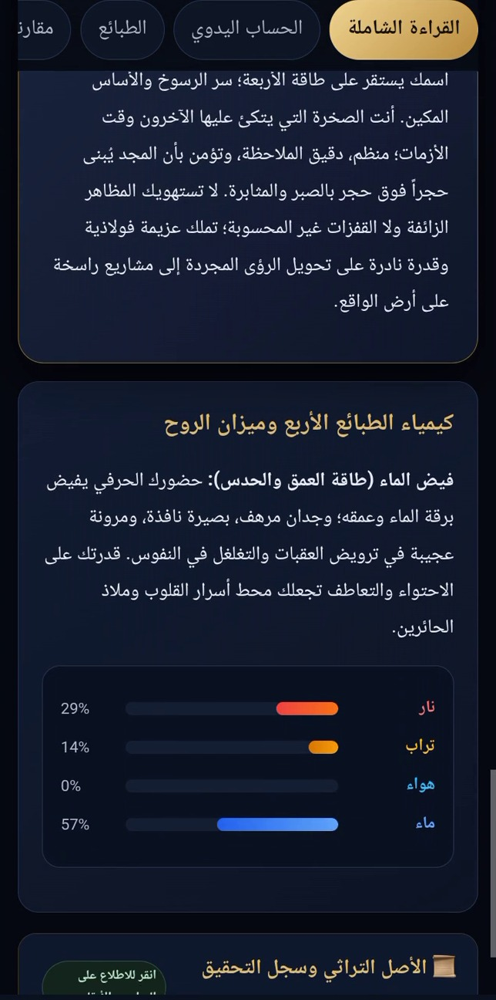
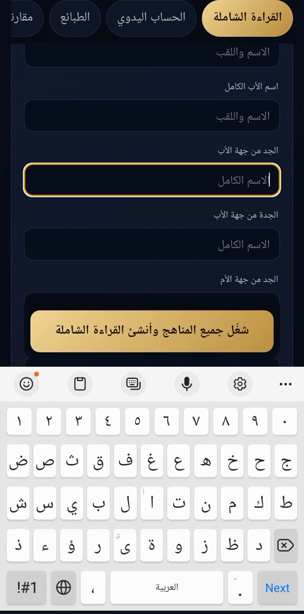
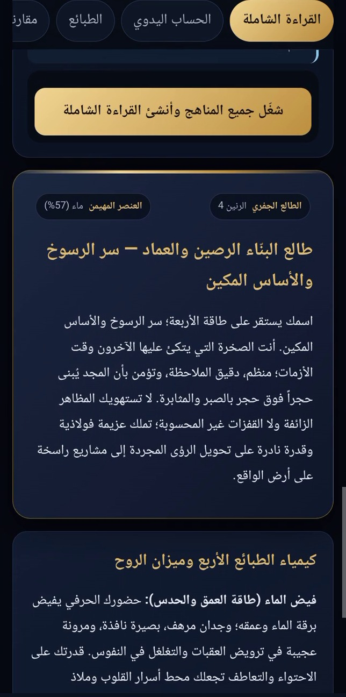
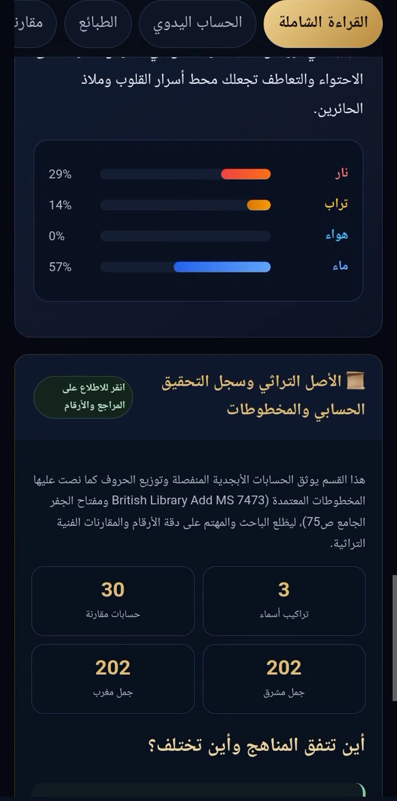

كيف حسب القدماء اسمك بحساب الجُمَّل؟
احسب القيم العددية للحروف وفق مناهج المشرق والمغرب والطبائع الأربع (نار وتراب وهواء وماء) من المخطوطات التراثية، مع ذكر رقم المخطوطة والصفحة وبلا أي جمع للبيانات.




عروض الفيديو
علم الجفر: حساب الجُمَّل خطوة بخطوة (23 ثانية)
إدخال الاسم العربي، عرض الطبائع الأربع، وسجل التحقيق الرقمي برقم المخطوطة.
تراث الأجداد في جيبك أينما كنت (21 ثانية)
استعراض كيمياء الطبائع الأربع ومطابقة حساب المشرق والمغرب دون اتصال بالإنترنت.
ماذا يقدّم تطبيق علم الجفر؟
جميع مناهج الحساب التراثية
- القراءة الشاملة، والحساب اليدوي، ومقارنة تراكيب الأسماء في شاشة واحدة.
- مقارنة دقيقة بين جُمَّل المشرق وجُمَّل المغرب ومعالجة التاء المربوطة والألف.
- توزيع الطبائع الأربع (نار، تراب، هواء، ماء) بنسب واضحة وسهلة القراءة.
توثيق المخطوطات وخصوصية كاملة
- إحالات واضحة إلى المصادر المرجعية مثل مخطوطة
British Library Add MS 7473ومفتاح الجفر الجامع. - الأسماء المدخلة تبقى على جهازك ولا تُرفع لأي خادم.
- مجاني مع إعلانات AdMob (+ قراءة بمكافأة)، أو ترقية Al-Jafr Pro لمرة واحدة (€3.99) لقراءات ومقارنات غير محدودة.
أسئلة شائعة
هل يتم إرسال الأسماء التي أكتبها إلى الإنترنت؟
لا، جميع الحسابات تجري محلياً داخل التطبيق على هاتفك ولا يتم جمع أو تخزين بياناتك على خوادمنا.
ما الفرق بين النسخة المجانية و Al-Jafr Pro؟
النسخة المجانية مدعومة بإعلانات AdMob وتتيح قراءة إضافية عبر إعلانات المكافأة، بينما تزيل ترقية Al-Jafr Pro لمرة واحدة عبر غوغل بلاي الإعلانات وتفتح قراءات ومقارنات أسماء غير محدودة.
هل يوضح التطبيق الاختلاف بين مناهج الحساب؟
نعم، يعرض قسم «أين تتفق المناهج وأين تختلف» تفاصيل المجموع في كل طريقة مقارنةً بالمخطوطات.
للاستفسارات والدعم: digital.nexus.studios2@gmail.com · صفحة التطبيق على Google Play